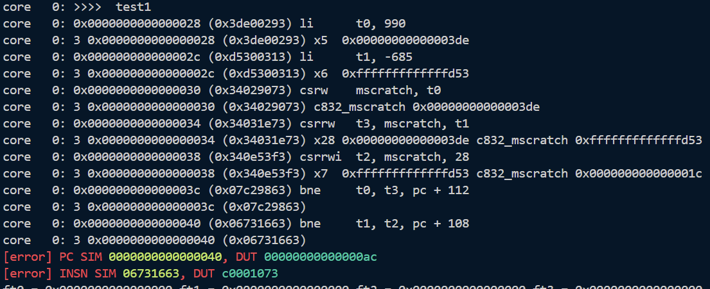
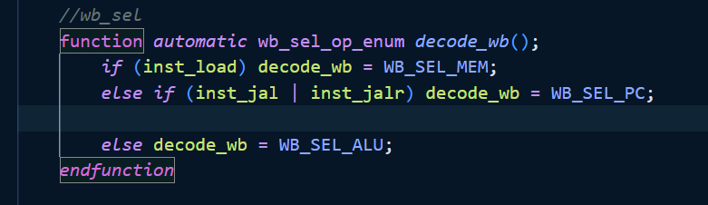
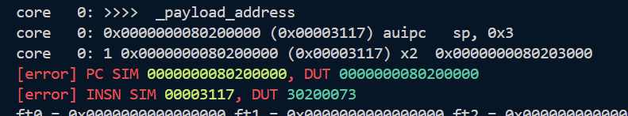
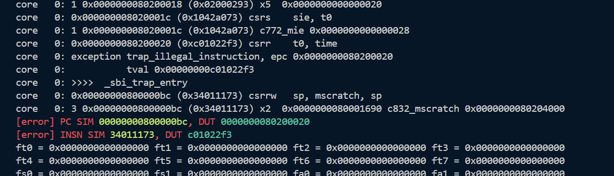
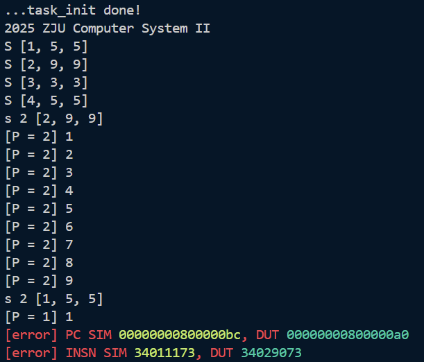
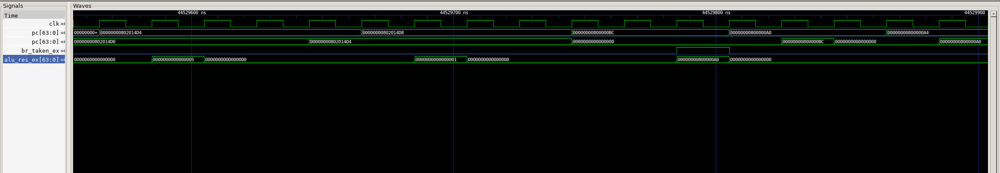
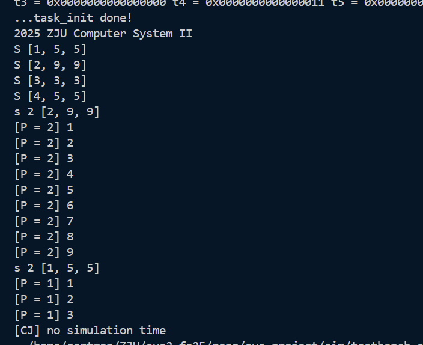

完善CPU并运行自己编写的内核。
csrrw t3, mscratch, t1指令无法正确写入t3，导致后续bne指令错误跳转 
Controller.sv中没有正确设置CSR指令的写使能信号csr_we，导致CSR寄存器无法写入数据。并且忘记修改wb_sel信号译码逻辑，导致wb_sel信号没有被设置为CSR寄存器读出的数据。
else if (inst_csr && funct3 != 3'b000) decode_wb = WB_SEL_CSR;，并且在默认值中添加ctrl_signals.csr_we = decode_csr_we();
此外，原本的controller模块中we_reg信号并没有在opcode==OPCODE_CSR时置高，导致csr指令无法向通用寄存器写入数据。因此做如下修改：
ctrl_signals.we_reg = (inst_reg | inst_load | inst_imm | inst_auipc | inst_lui | inst_regw | inst_jal | inst_jalr |
inst_immw | (inst_csr && funct3 != 3'b000));

mret后，pc已经正确更新为0x80200000，但是inst仍然是0x30200073，出现取指过时。valid信号没有考虑switch_mode的影响，添加以下逻辑问题得到解决：
logic discard_next_fetch;
always_ff @(posedge clk) begin
if (rst) begin
discard_next_fetch <= 1'b0;
end else begin
if (switch_mode || br_taken_ex) begin
// 如果正在等待响应 (IF2/WAITFOR2) 且响应还没到，或者正在发送请求 (IF1/WAITFOR1) 且请求已发出
if ((current_state == IF2 || current_state == WAITFOR2) && !(imem_ift.r_reply_valid && imem_ift.r_reply_ready)) begin
discard_next_fetch <= 1'b1;
end else if ((current_state == IF1 || current_state == WAITFOR1) && imem_ift.r_request_valid && imem_ift.r_request_ready) begin
discard_next_fetch <= 1'b1;
end
end else if (imem_ift.r_reply_valid && imem_ift.r_reply_ready) begin
// 当响应到达时，清除丢弃标记
discard_next_fetch <= 1'b0;
end
end
end
assign if_id_reg_in.valid = imem_ift.r_reply_valid & imem_ift.r_reply_ready & ~discard_next_fetch;

0x0000000080200020 (0xc01022f3) csrr t0, time时，应当进入trap处理，因为我们的仿真框架在S态下无法读取time寄存器。但是dut并没有进入trap处理。clock.c，还需要将head.S中的rdtime注释掉。
仿真多次输出
[error] 00000000802000d0@10002373 CSR UNMATCH SIM 0000000200000120, DUT 0000000000000120
解决方案：这是因为Spike模拟器默认实现了 UXL 字段（User XLEN），对于 64 位架构，该字段通常为 2。
而 CSRModule.sv 中 sstatus 的将其设置为 0。
wire [63:0] sstatus={55'b0,spp_reg,2'b0,spie_reg,upie_reg,2'b0,sie_reg,uie_reg};
将其修改为
wire [63:0] sstatus={30'b10, 23'b0,spp_reg,2'b0,spie_reg,upie_reg,2'b0,sie_reg,uie_reg};

0x800000bc后pc没有正藏递增，而是变成了0x800000a0，导致仿真出错
br_taken_ex错误地被设置为1，导致pc跳转到错误的地址alu_res_ex。pc=0x802014d4后，程序应该进入trap_entry:0x800000bc，但是inst会根据0x802014d8取到fed702e3，这是一条beq指令，导致了刚才提到的错误跳转。inst对npc_sel的影响，所以做如下修改：
assign id_ex_reg_in.npc_sel = if_id_reg_out.valid ? ctrl_signals_id.npc_sel : NPC_SEL_PC;
最终得到正确输出：

printk 函数输出一个字符 a 的过程中需要发生几次特权态切换？请将切换前后的特权态和切换的原因一一列举出来。 发生2次特权态切换：
printk前，特权态为S态，执行printk时会调用sbi接口来向控制台输出字符，这一步是通过ecall实现的，在S态执行ecall会触发Environmental Call from S-mode异常，使CPU切换到M态来处理该异常。ecall异常后，CPU会通过mret指令返回到之前的S态（mepc指向的地址）继续执行printk函数后续的代码。应当选择MEM阶段的异常，理由如下：
CSRModule在WB阶段接收异常信息except_commit决定是否触发switch_mode，而MEM阶段的指令更早进入WB）。可以为特定的运算设计专门的指令集扩展，比如为矩阵乘法运算设计专门的指令（lab4添加独立于cpu的卷积加速器也可实现）：
opcode和funct字段。Controller.sv中添加对新指令的译码逻辑，生成相应的控制信号。core.sv中添加计算矩阵乘法的硬件单元，完善数据通路，在执行阶段调用该单元进行计算。trap_handler中处理可能出现的异常情况，比如矩阵维度不匹配等。终于结束了。。。这次综合实验的文档写得貌似没有之前详细，没有对于预期输出的展示。
下学期没选sys3，要和计算机系统say goodbye了。